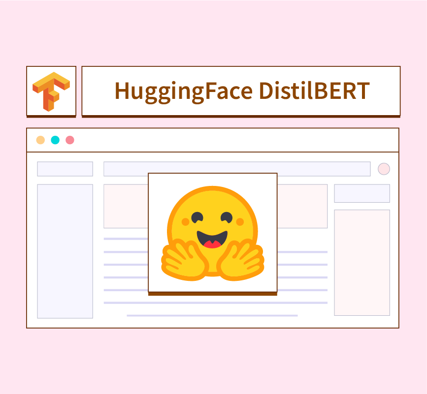
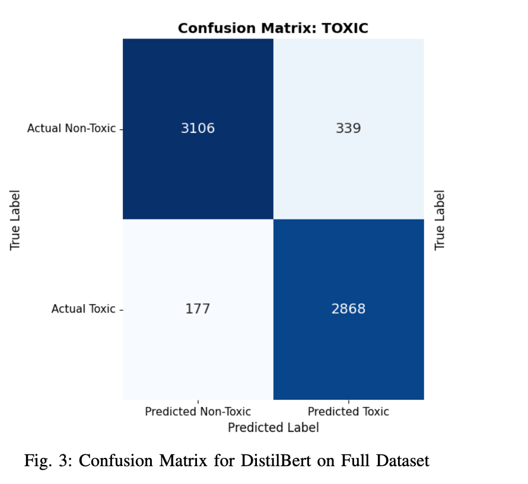

01 · Problem The Challenge
Standard Discord server moderation tools often rely on rigid keyword blacklists that are easily bypassed and lack contextual awareness. When building a machine learning solution to intercept toxic content in real-time using the Jigsaw Toxic Comment dataset, a critical "Accuracy Paradox" emerged: baseline models achieved over 91% accuracy but failed to detect actual toxic comments due to dramatic class imbalance, yielding an unacceptable recall of ~0.62.
02 · Solution The Approach
I engineered a robust NLP preprocessing pipeline and executed strategic downsampling on the majority class. By intentionally sacrificing superficial overall accuracy, I drastically boosted toxic detection recall to 0.85, establishing a much safer baseline for automated community moderation.
After benchmarking computationally efficient classical models (Logistic Regression, Linear SVC) via Scikit-learn and TF-IDF, I leveraged Hugging Face to fine-tune a DistilBERT transformer architecture. Because DistilBERT understands semantic context, sarcasm, and complex sentence structures, it achieved a 0.94 recall and 0.92 F1-score on the toxic class, successfully minimizing False Negatives. I then led the end-to-end integration of this inference model directly into a functional asynchronous discord.py bot framework.

Imbalance Handling & Recall optimization

Model Confusion Matrix evaluation
03 · Engineering Technical Highlights
Data Engineering
Engineered an NLP pipeline handling text normalization and executed strategic downsampling to resolve the Accuracy Paradox in highly imbalanced datasets.
Transformer Fine-Tuning
Fine-tuned distilbert-base-uncased to parse semantic context beyond standard keyword-matching, achieving a 0.94 recall on the toxic class.
Real-Time Integration
Led the end-to-end integration of the deep learning inference model into a live discord.py framework, providing automated identification of harmful content.
04 · Results The Outcome
The deployed architecture successfully minimized False Negatives, demonstrating that advanced transformer models can be optimized for real-time inference within highly active digital spaces. The bot effectively intercepts toxic content dynamically, proving practical, real-world viability for ML-driven community moderation.